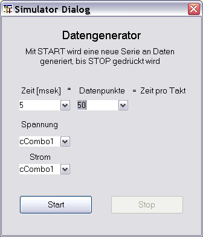

Der Simulator Gerätedialog dient zur Erzeugen synthetischer Daten für alle möglichen Testfälle. Hier ist kein besonderer Anspruch an Schönheit gestellt. Die Funktionalität kann von jedermann für seine eigenen Bedürfnisse angepasst werden.
